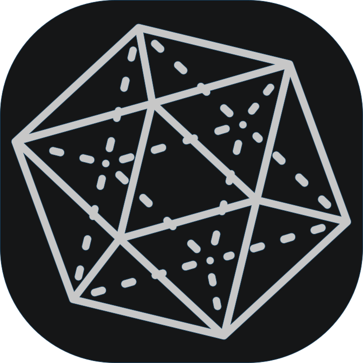

ATO
Advanced Tab Organizer
Tabs
0
Duplicates
0
Domains
0
×
×
All fields
In URL
In title
Undo
All
Search Results
0
Close results
No tabs match your search
Playing Media
0
Duplicated Tabs
0
Close duplicates
Default
Title
Site
No duplicate tabs
0
tab(s) protected
0
browser tab(s) can't be closed by extensions
All Tabs
0
×
Sort:
Default
Title
Site
Old/New
Dupes
Sort groups:
A-Z
Most
Recent